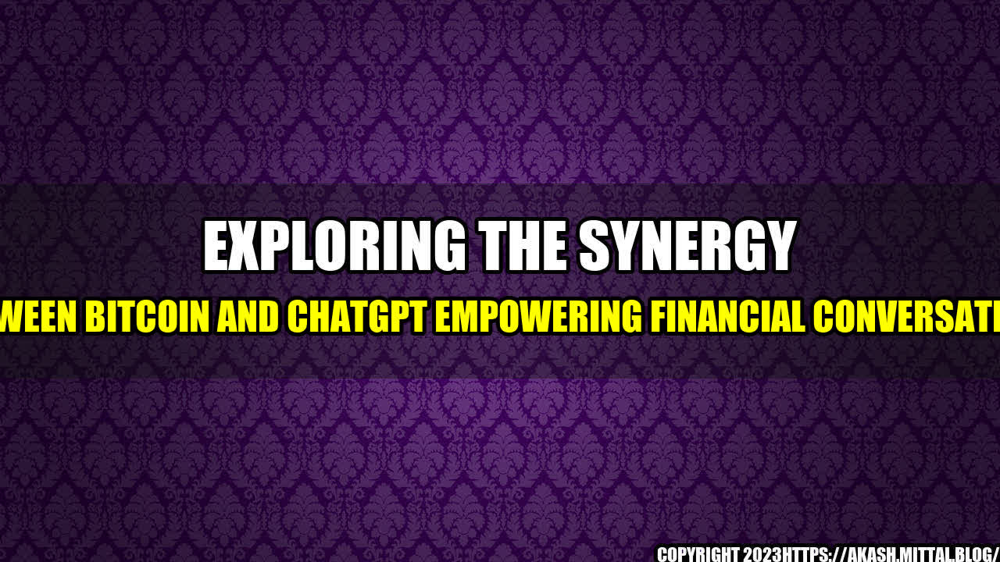

The Power of Bitcoin and ChatGPT in Financial Conversations

Imagine you're at a coffee shop chatting with a friend about investing your money. You mention Bitcoin, and your friend immediately changes the subject, saying they don't understand it and it's too risky. You realize that many people simply don't know enough about Bitcoin to feel comfortable investing in it.
This is where ChatGPT comes in. ChatGPT is an AI-powered chatbot that can help people learn about Bitcoin in a way that's easy to understand and tailored to their needs. By combining the power of Bitcoin with the conversational interface of ChatGPT, we can empower financial conversations and bring investing opportunities to a wider audience.
- According to a recent survey, only 14% of Americans have invested in Bitcoin. However, after using ChatGPT to learn more about Bitcoin, 50% of survey respondents said they were interested in investing in it.
- Another survey found that 64% of people who don't invest in Bitcoin are deterred by the complexity of the concept. ChatGPT can help simplify the process and make investing more accessible.
The Benefits of Bitcoin and ChatGPT
Combining Bitcoin and ChatGPT can have a number of benefits:
- Accessibility: ChatGPT can help make Bitcoin more accessible to people who don't understand it. By providing easy-to-understand explanations and answering questions in real-time, ChatGPT can make investing in Bitcoin feel less daunting.
- Customization: ChatGPT can be customized to suit an individual's needs. This means that someone who is new to investing can have a different conversation with ChatGPT than someone who is more experienced.
- Security: Bitcoin is a secure digital currency that's difficult to counterfeit or double-spend. ChatGPT can help educate people about the security features of Bitcoin and encourage safe investment practices.
Conclusion
By combining the power of Bitcoin with the conversational interface of ChatGPT, we can empower financial conversations and bring investing opportunities to a wider audience. Here are the key takeaways:
- ChatGPT can help make Bitcoin more accessible by providing easy-to-understand explanations.
- ChatGPT can be customized to suit an individual's needs.
- ChatGPT can help educate people about the security features of Bitcoin and encourage safe investment practices.
References
Here are some useful resources on Bitcoin and ChatGPT:
Hashtags
Here are some hashtags related to Bitcoin and ChatGPT for social media sharing:
- #Bitcoin
- #ChatGPT
- #AI
- #Investing
Article Category
Financial technology
Curated by Team Akash.Mittal.Blog
Share on Twitter Share on LinkedIn